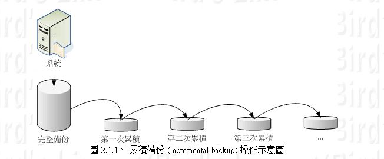

支援full backup與incremental backup
保存檔案權限,包括ACL與xattr
可以讀入設定檔將備份資料夾分組並指定要備份哪組
設置兩台VM於每天半夜0:00備份到另一台
A fast,versatile,remote (and local) file-copying tool
預設就可以遠端同步東西了...
大家熟悉的直接複製貼上全部要backup的東西
rsync如果目標資料夾是empty預設就是這樣的行為
每次備份的時候僅備份和上次備份有差異的檔案
利用 --link-dest=DIR 實現
當rsync運作時檢查要複製的檔案是否和 DIR 裡的一樣
如果和 DIR 的一樣則不複製，改成 hardlink 到 DIR 的該 file
這樣子可以避免重複複製檔案
更改 /etc/crontab
such as --dry-run